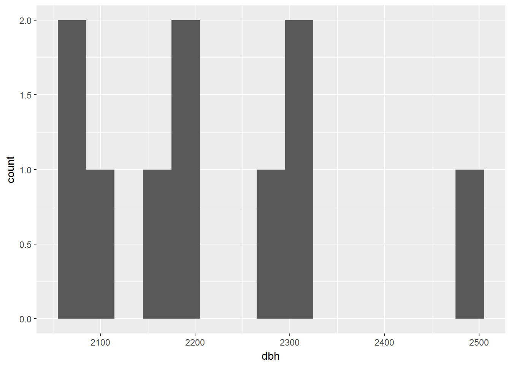
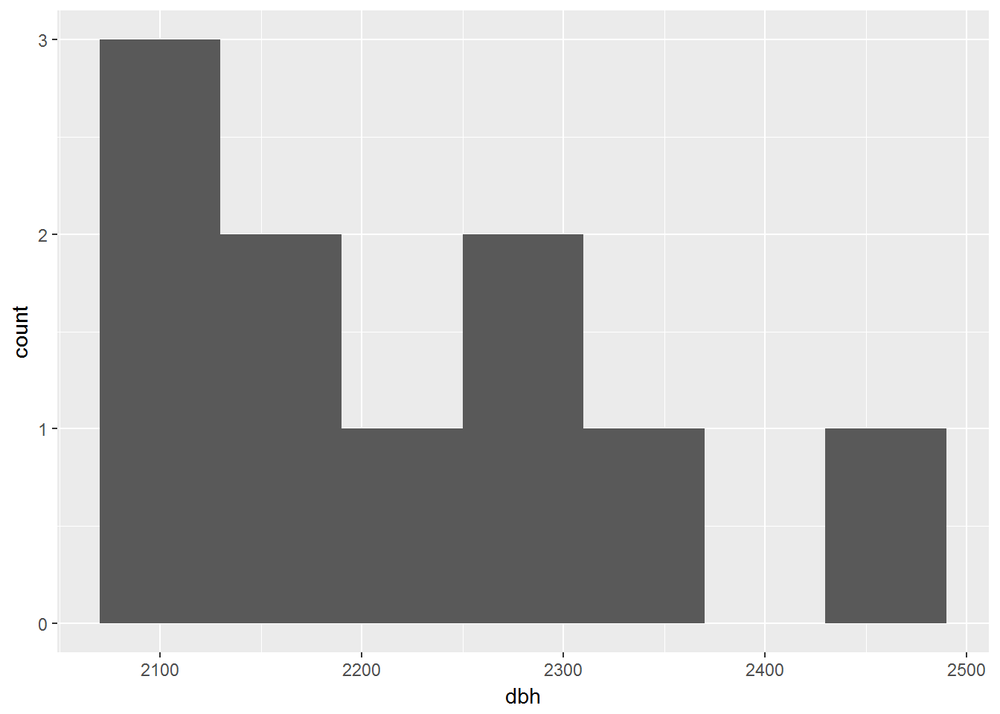
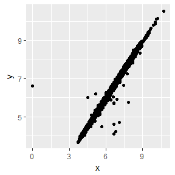

Exploratory Data Analysis
Mauro Lepore
2017-06-23
Introduction
This vignette will show you how to explore your data systematically, using modern and more powerful tools for visualization and transformation. An exploratory data analysis is an iterative process that aims to use data and some research questions to learn something that can help refine the questions and move forward the learning spiral.
Prerequisites
The data we will use comes from Barro Colorado Island. It is available at DOI: https://doi.org/10.5479/data.bci.20130603 and via the bci data package.
Some functions we will use are available in the forestr package, and many are available in the tidyverse package (which includes, for example, the packages dplyr and ggplot2). If you are new to the tidyversre, you may feel a little frustrated at the begining. But quickly your effort will pay-off. The tools in the tidyverse are powerful, realatively easy to use and consistent; so once you learn some, you will learn most other tools intuitively.
To more compleately learan how to do data science with the tidyverse read R for Data Science, by Garrett Grolemund and Hadley Wickham.
# To install packages see ?install.packages and ?devtools::install_github
# Data
library(bci) # to access data from BCI
# Functions
library(forestr) # to analyse forest dynamics
library(tidyverse) # to visualize and transform data, and much more
#> Loading tidyverse: ggplot2
#> Loading tidyverse: tibble
#> Loading tidyverse: tidyr
#> Loading tidyverse: readr
#> Loading tidyverse: purrr
#> Loading tidyverse: dplyr
#> Conflicts with tidy packages ----------------------------------------------
#> filter(): dplyr, stats
#> lag(): dplyr, stats
#> map(): purrr, forestrStyle
Being explicit about what package a function comes from
Frequently I refer to functions from a particular package as package::fun() (e.g. the first time I use a function). Althought the prefix package:: is unnecesary if the package has previously been loaded with library(package), I will often keep that prefix to be explicit about where the function comes from. This should help you to find the function if you ever want to use it again.
The tidyverse style guide
I use The tidyverse style guide.
Good coding style is like correct punctuation: you can manage without it, butitsuremakesthingseasiertoread.
–Hadley Wickham, The tidyverse style guide.
Combining multiple operations with the pipe %>%
Often I combine multiple operations with the pipe %>% because it makes the code considerably more readable.
[The pipe] focuses on the transformations, not what’s being transformed, which makes the code easier to read. You can read it as a series of imperative statements: group, then summarise, then filter. As suggested by this reading, a good way to pronounce
%>%when reading code is “then”.
Behind the scenes,
x %>% f(y)turns intof(x, y), andx %>% f(y) %>% g(z)turns intog(f(x, y), z)and so on. You can use the pipe to rewrite multiple operations in a way that you can read left-to-right, top-to-bottom.
Working with the pipe is one of the key criteria for belonging to the tidyverse. The only exception is ggplot2: it was written before the pipe was discovered.
Definitions
A variable is a quantity, quality, or property that you can measure.
A value is the state of a variable when you measure it. The value of a variable may change from measurement to measurement.
An observation is a set of measurements made under similar conditions (you usually make all of the measurements in an observation at the same time and on the same object). An observation will contain several values, each associated with a different variable. I’ll sometimes refer to an observation as a data point.
Tabular data is a set of values, each associated with a variable and an observation. Tabular data is tidy if each value is placed in its own “cell”, each variable in its own column, and each observation in its own row.
Questions
To start exploring your data, you can generally ask:
What type of variation occurs within my variables?
What type of covariation occurs between my variables? [^2
Variation
Variation is the tendency of the values of a variable to change from measurement to measurement.
Every variable varies with a particular pattern, and that pattern may be insightful. To understand the variation pattern of a variable we can visualize the distribution of the variables’ values. The best way to visualize a variable’s distribution depends on whether the variable is categorical or continuous.
The BCI data has both, categorical and continuous variables. In R, categorical variables are usually stored as character strings (
These are the first few rows of the data FullViewTable census 7 from Barro Colorado Island, released in 2012:
head(bci::bci12full7)
#> treeID stemID tag StemTag sp quadrat gx gy MeasureID
#> 1 1 NA -05599 <NA> swars1 4007 800.2 152.2 NA
#> 2 2 NA -22851 <NA> hybapr 0718 151.5 378.8 NA
#> 3 3 NA -24362 <NA> aegipa 0417 95.2 357.5 NA
#> 4 4 NA -26589 <NA> beilpe 0007 11.7 151.1 NA
#> 5 5 NA -26590 <NA> faraoc 0004 7.7 96.2 NA
#> 6 6 NA -26703 <NA> hybapr 0210 50.1 215.4 NA
#> CensusID dbh pom hom ExactDate DFstatus codes nostems date status
#> 1 NA NA <NA> NA <NA> dead <NA> NA 18465.07 D
#> 2 NA NA <NA> NA <NA> dead <NA> NA 18329.00 D
#> 3 NA NA <NA> NA <NA> dead <NA> NA 18316.05 D
#> 4 NA NA <NA> NA <NA> dead <NA> NA 18295.61 D
#> 5 NA NA <NA> NA <NA> dead <NA> NA 18288.57 D
#> 6 NA NA <NA> NA <NA> dead <NA> NA 18300.45 D
#> agb
#> 1 0
#> 2 0
#> 3 0
#> 4 0
#> 5 0
#> 6 0If you want to handle the data faster and print it nicer, convert dataframes to tibbles:
bci12full7 <- tibble::as_tibble(bci12full7)
bci12full7
#> # A tibble: 394,658 x 20
#> treeID stemID tag StemTag sp quadrat gx gy MeasureID
#> * <int> <int> <chr> <chr> <chr> <chr> <dbl> <dbl> <int>
#> 1 1 NA -05599 <NA> swars1 4007 800.2 152.2 NA
#> 2 2 NA -22851 <NA> hybapr 0718 151.5 378.8 NA
#> 3 3 NA -24362 <NA> aegipa 0417 95.2 357.5 NA
#> 4 4 NA -26589 <NA> beilpe 0007 11.7 151.1 NA
#> 5 5 NA -26590 <NA> faraoc 0004 7.7 96.2 NA
#> 6 6 NA -26703 <NA> hybapr 0210 50.1 215.4 NA
#> 7 7 NA -26746 <NA> tet2pa 0218 58.5 364.7 NA
#> 8 8 NA -27125 <NA> des2pa 0613 139.8 267.1 NA
#> 9 9 NA -27298 <NA> crotbi 0704 157.8 86.4 NA
#> 10 10 NA -27784 <NA> alsebl NA NA NA
#> # ... with 394,648 more rows, and 11 more variables: CensusID <int>,
#> # dbh <dbl>, pom <chr>, hom <dbl>, ExactDate <chr>, DFstatus <chr>,
#> # codes <chr>, nostems <dbl>, date <dbl>, status <chr>, agb <dbl>NOTES:
- If you ever want to print more rows than tibble’s default use: print(your_tibble, n = rows_n)
- If when you use tibbles with forestr functions you get this error message: “Can’t use matrix or array for column indexing”, please read “Interacting with legacy code” at https://goo.gl/CJ5jLs.
- For alternative views try:
as.data.frame(bci12full7) # takes long and doesn't print nicely
View(bci12full7) # prints to a viewer panel
str(bci12full7) # informative and prints nice
dplyr::glimpse(bci12full7) # like str() but shows as much data as possibleVisualizing Distributions
Categorical variables
A variable is categorical if it can only take one of a small set of values.
To examine the distribution of a categorical variable, use a bar chart.
– R for Data Science, Garrett Grolemund and Hadley Wickham.
Let’s use a bar chart to explore the variable status, which represents the status of the tree or stem (see description of ViewFullTable variables at the data dictionary). Possible values are: alive (tree or stem is alive), dead (tree is dead), lost_stem (stem is dead, not found, or broken, etc. but other stems of the tree are still alive), or missing (tree or stem was not found, so measurement is unknown).
ggplot2::ggplot(data = bci12full7) +
ggplot2::geom_bar(mapping = aes(x = status))
Values distribution of the categorical variable status
Although the data dictionary does not explicitely refer to A, D and M, you likely know or guess that they mean alive, dead and misisng. To confirm this, let’s first count the the number of unique values of the variables status and DFstatus (DFstatus is not decribed in the data dictionary), then joining both counts by the shared variable n:
count_status <- dplyr::count(bci12full7, status)
count_DFstatus <- dplyr::count(bci12full7, DFstatus)
dplyr::full_join(count_status, count_DFstatus)
#> Joining, by = "n"
#> # A tibble: 3 x 3
#> status n DFstatus
#> <chr> <int> <chr>
#> 1 A 221758 alive
#> 2 D 172848 dead
#> 3 M 52 no_recordContinuous Variables
A variable is continuous if it can take any of an infinite set of ordered values.
To examine the distribution of a continuous variable use a histogram.
You should always explore a variety of binwidths when working with histograms, as different binwidths can reveal different patterns.
– R for Data Science, Garrett Grolemund and Hadley Wickham.
Let’s use a histogram to explore the variable dbh, which represents the stem diameter, usually at breast height (see description of ViewFullTable variables at the data dictionary).
In this section we will focus on small trees; big trees will be explored later. And we will try bars of different widths and choose one for further analyses.
small_dbh <- dplyr::filter(bci12full7, dbh < 500)
gg_small_dbh <- ggplot(data = small_dbh, mapping = aes(x = dbh))
gg_small_dbh + geom_histogram(binwidth = 10)
gg_small_dbh + geom_histogram(aes(dbh), binwidth = 30)
gg_small_dbh + geom_histogram(aes(dbh), binwidth = 60)
A bar width of 30 dbh seems useful.
useful_barwidth <- 30To overlay multiple histograms in the same plot, geom_freqpoly() may produce clearer plots than geom_histogram() because it is easier to understand overlying lines than bars.
# Make n groups with ~ numbers of observations with `ggplot2::cut_number()`
small_cut_num <- mutate(small_dbh, equal_n = cut_number(dbh, n = 5))
# Now, compare the next two plots:
ggplot(small_cut_num) + geom_histogram(aes(dbh, color = equal_n))
#> `stat_bin()` using `bins = 30`. Pick better value with `binwidth`.
For multiple histograms, lines are easier to understand than bars.
ggplot(small_cut_num) + geom_freqpoly(aes(dbh, color = equal_n))
#> `stat_bin()` using `bins = 30`. Pick better value with `binwidth`.
For multiple histograms, lines are easier to understand than bars.
Typical and rare Values
In both bar charts and histograms, tall and short bars let us explore common and less-common values. For example, we could ask:
- Which values are the most common? Why?
- Which values are rare? Why? Does that match your expectations?
- Can you see any unusual patterns? What might explain them?
– R for Data Science, Garrett Grolemund and Hadley Wickham.
The later two plots give a good estimate of what tree diameters are most common. You can compute the same count manually, by cutting the variable with ggplot2::cut_width() and then counting the unique pieces with dplyr::count():
small_cut_width <- dplyr::mutate(
small_dbh,
dbh_cut = ggplot2::cut_width(dbh, width = useful_barwidth)
)
small_cut_width %>% dplyr::count(dbh_cut, sort = TRUE)
#> # A tibble: 18 x 2
#> dbh_cut n
#> <fctr> <int>
#> 1 (15,45] 106249
#> 2 [-15,15] 46024
#> 3 (45,75] 25191
#> 4 (75,105] 10867
#> 5 (105,135] 5998
#> 6 (135,165] 3173
#> 7 (165,195] 1952
#> 8 (195,225] 1459
#> 9 (225,255] 1089
#> 10 (255,285] 887
#> 11 (285,315] 702
#> 12 (315,345] 570
#> 13 (345,375] 484
#> 14 (375,405] 410
#> 15 (405,435] 315
#> 16 (435,465] 248
#> 17 (465,495] 248
#> 18 (495,525] 22Although the most common trees are those which diameter (dbh) is between 15 mm and 45 mm, smaller trees are generally more common than bigger trees, which we already learned from previous plots.
Clustered values
In this section we will focus on the largest trees; later we will explore all trees, including medium-size ones.
largest_dbh <- dplyr::filter(bci12full7, dbh > 2000)Clusters of similar values suggest that subgroups exist in your data. To understand the subgroups, ask:
- How are the observations within each cluster similar to each other?
- How are the observations in separate clusters different from each other?
- How can you explain or describe the clusters?
- Why might the appearance of clusters be misleading?
– R for Data Science, Garrett Grolemund and Hadley Wickham.
In the next plot, however, the clustering may be an artifact of the chosen bar-width; the clustering dissapears with bars twice as wide.
gg_largest_dbh <- ggplot(largest_dbh, aes(dbh))
gg_largest_dbh + geom_histogram(binwidth = useful_barwidth)
gg_largest_dbh + geom_histogram(binwidth = useful_barwidth * 2)
Unusual values
In this section we will work with the entire bci12full7 dataset.
Outliers are observations that are unusual; data points that don’t seem to fit the pattern. Sometimes outliers are data entry errors; other times outliers suggest important new science. When you have a lot of data, outliers are sometimes difficult to see in a histogram.
For example, take the distribution of the dbh variable of the bci12full7 dataset. The only evidence of outliers is the unusually wide limits on the x-axis (stress mine).
– R for Data Science, Garrett Grolemund and Hadley Wickham.
bci_hist <- ggplot(bci12full7, aes(x = dbh)) +
geom_histogram(binwidth = useful_barwidth)
bci_hist
#> Warning: Removed 187399 rows containing non-finite values (stat_bin).
There are so many observations in the common bins that the rare bins are so short that you can’t see them . To make it easy to see the unusual values, we need to zoom to small values of the y-axis with
coord_cartesian():
– R for Data Science, Garrett Grolemund and Hadley Wickham.
bci_hist + coord_cartesian(ylim = c(0, 50))
#> Warning: Removed 187399 rows containing non-finite values (stat_bin).
(
coord_cartesian()also has anxlim()argument for when you need to zoom into the x-axis. ggplot2 also hasxlim()andylim()functions that work slightly differently: they throw away the data outside the limits.)
– R for Data Science, Garrett Grolemund and Hadley Wickham.
This allows us to see that dbh values over 2000 are unusual. We pluck them out with dplyr::filter() and select a subset of informative variables:
unusual_trees <- bci12full7 %>%
filter(dbh > 2000) %>%
select(treeID, ExactDate, status, gx, gy, dbh) %>%
arrange(dbh)
unusual_trees
#> # A tibble: 10 x 6
#> treeID ExactDate status gx gy dbh
#> <int> <chr> <chr> <dbl> <dbl> <dbl>
#> 1 897 2011-03-28 A 883.6 197.7 2080
#> 2 5169 2010-08-07 A 389.2 166.9 2085
#> 3 3634 2010-08-23 A 577.4 22.1 2103
#> 4 3608 2010-08-23 A 589.3 60.3 2172
#> 5 2564 2010-08-30 A 716.4 27.2 2180
#> 6 1160 2011-03-28 A 861.2 39.9 2200
#> 7 5100 2010-08-30 A 387.9 404.1 2285
#> 8 4142 2011-03-28 A 517.0 323.9 2300
#> 9 1903 2010-09-10 A 780.4 45.4 2320
#> 10 2935 2010-09-06 A 648.6 28.4 2477We could ask where in the plot the unusual trees are located:
# For faster analysis and to avoid overplotting, choose only 100 trees at random
sample_100 <- bci12full7 %>% sample_n(100)
unusual_tree_loc <- ggplot(sample_100, aes(gx, gy)) +
# plot a few points for reference with only 1/10 opacity (less distracting)
geom_point(alpha = 1/10) +
# highlight location of unusual trees in the plot
geom_point(data = unusual_trees, colour = "red")A number of the unusually large trees seem to be on the edge of the plot, where gy values are lower than 100. This information helps us to filter those edge trees selectively, and decide what to do with them.
edge_trees <- unusual_trees %>% filter(gy < 100)
unusual_tree_loc +
geom_point(
data = edge_trees,
size = 3, shape = 1 # highlight edge trees with bigger and hollow points
)
It’s good practice to repeat your analysis with and without the outliers. If they have minimal effect on the results, and you can’t figure out why they’re there, it’s reasonable to replace them with missing values, and move on. However, if they have a substantial effect on your results, you shouldn’t drop them without justification. You’ll need to figure out what caused them (e.g. a data entry error) and disclose that you removed them in your write-up.
Missing Values
(Except for the data, this section comes from R for Data Science, Garrett Grolemund and Hadley Wickham.)
If you’ve encountered unusual values in your dataset, and simply want to move on to the rest of your analysis, you have two options.
-
Drop the entire row with the strange values:
diamonds2 <- diamonds %>% filter(between(y, 3, 20))I don’t recommend this option because just because one measurement is invalid, doesn’t mean all the measurements are. Additionally, if you have low quality data, by time that you’ve applied this approach to every variable you might find that you don’t have any data left!
-
Instead, I recommend replacing the unusual values with missing values. The easiest way to do this is to use
mutate()to replace the variable with a modified copy. You can use theifelse()function to replace unusual values withNA:diamonds2 <- diamonds %>% mutate(y = ifelse(y < 3 | y > 20, NA, y))
ifelse() has three arguments. The first argument test should be a logical vector. The result will contain the value of the second argument, yes, when test is TRUE, and the value of the third argument, no, when it is false.
Like R, ggplot2 subscribes to the philosophy that missing values should never silently go missing. It’s not obvious where you should plot missing values, so ggplot2 doesn’t include them in the plot, but it does warn that they’ve been removed:
ggplot(data = diamonds2, mapping = aes(x = x, y = y)) +
geom_point()
#> Warning: Removed 9 rows containing missing values (geom_point).
To suppress that warning, set na.rm = TRUE:
ggplot(data = diamonds2, mapping = aes(x = x, y = y)) +
geom_point(na.rm = TRUE)Other times you want to understand what makes observations with missing values different to observations with recorded values. For example, in nycflights13::flights, missing values in the dep_time variable indicate that the flight was cancelled. So you might want to compare the scheduled departure times for cancelled and non-cancelled times. You can do this by making a new variable with is.na().
nycflights13::flights %>%
mutate(
cancelled = is.na(dep_time),
sched_hour = sched_dep_time %/% 100,
sched_min = sched_dep_time %% 100,
sched_dep_time = sched_hour + sched_min / 60
) %>%
ggplot(mapping = aes(sched_dep_time)) +
geom_freqpoly(mapping = aes(colour = cancelled), binwidth = 1/4)
However this plot isn’t great because there are many more non-cancelled flights than cancelled flights. In the next section we’ll explore some techniques for improving this comparison.
To consider
Working with Dates
The variable date is the number of days since 1960-01-01 (see data dictionary at https://goo.gl/Q6XYrb), but it will be easier to interpret if we convert it to a date-time object (see ?lubridate::as_datetime).
library(lubridate)
#>
#> Attaching package: 'lubridate'
#> The following object is masked from 'package:base':
#>
#> date
# "Duration" is a useful intermediate; learn more with ?lubridate::duration
# %/%: integere diviison removes useless and annoying fraction of seconds.
bci12full7 <- mutate(bci12full7, duration = dseconds((date * 24 * 60 * 60) %/% 1))
bci12full7 <- mutate(bci12full7, datetime = as_datetime(duration, origin = "1960-01-01"))
bci12full7 %>%
select(date, datetime)
#> # A tibble: 394,658 x 2
#> date datetime
#> <dbl> <dttm>
#> 1 18465.07 2010-07-22 01:34:25
#> 2 18329.00 2010-03-08 00:00:00
#> 3 18316.05 2010-02-23 01:05:13
#> 4 18295.61 2010-02-02 14:42:34
#> 5 18288.57 2010-01-26 13:45:13
#> 6 18300.45 2010-02-07 10:48:56
#> 7 18319.00 2010-02-26 00:00:00
#> 8 18305.93 2010-02-12 22:16:49
#> 9 18292.02 2010-01-30 00:28:47
#> 10 NA NA
#> # ... with 394,648 more rowsbci12full7$date <- lubridate::as_date(bci12full7$date, origin = "1960-01-01")
bci12full7 %>%
select(date) %>%
glimpse()
#> Observations: 394,658
#> Variables: 1
#> $ date <date> 2010-07-22, 2010-03-08, 2010-02-23, 2010-02-02, 2010-01-...Tools to explore data quickly
skimr
library(skimr) # xxx remove or declare in DESCRIPTION in Suggest:
skim(bci12full7) %>% filter(stat == "hist") %>% as.matrix()
#> Warning: Skim does not know how to summarize of vector of class: Duration.
#> Coercing to numeric
#> var type stat level value
#> [1,] "treeID" "integer" "hist" "<U+2587><U+2587><U+2587><U+2587><U+2587><U+2587><U+2587><U+2585><U+2581><U+2585>" "0"
#> [2,] "stemID" "integer" "hist" "<U+2587><U+2581><U+2581><U+2581><U+2581><U+2581><U+2581><U+2581><U+2581><U+2581>" "0"
#> [3,] "gx" "numeric" "hist" "<U+2587><U+2587><U+2587><U+2587><U+2587><U+2587><U+2587><U+2587><U+2587><U+2587>" "0"
#> [4,] "gy" "numeric" "hist" "<U+2587><U+2587><U+2587><U+2587><U+2587><U+2587><U+2587><U+2587><U+2587><U+2587>" "0"
#> [5,] "MeasureID" "integer" "hist" "<U+2587><U+2587><U+2587><U+2587><U+2587><U+2587><U+2587><U+2587><U+2587><U+2587>" "0"
#> [6,] "CensusID" "integer" "hist" "<U+2581><U+2581><U+2581><U+2581><U+2587><U+2581><U+2581><U+2581><U+2581><U+2581>" "0"
#> [7,] "dbh" "numeric" "hist" "<U+2587><U+2581><U+2581><U+2581><U+2581><U+2581><U+2581><U+2581><U+2581><U+2581>" "0"
#> [8,] "hom" "numeric" "hist" "<U+2587><U+2581><U+2581><U+2581><U+2581><U+2581><U+2581><U+2581><U+2581><U+2581>" "0"
#> [9,] "nostems" "numeric" "hist" "<U+2587><U+2581><U+2581><U+2581><U+2581><U+2581><U+2581><U+2581><U+2581><U+2581>" "0"
#> [10,] "agb" "numeric" "hist" "<U+2587><U+2581><U+2581><U+2581><U+2581><U+2581><U+2581><U+2581><U+2581><U+2581>" "0"
#> [11,] "duration" "numeric" "hist" "<U+2587><U+2587><U+2587><U+2587><U+2586><U+2583><U+2581><U+2581><U+2581><U+2581>" "0"To do all of the above quickly, we can use package skimr (https://github.com/ropenscilabs/skimr).
library(skimr)
smry <- skim(diamonds)
smry %>%
dplyr::filter(stat == "hist") %>%
as.matrix() # Only needed in Windows for histograms (https://goo.gl/S8MaZW)